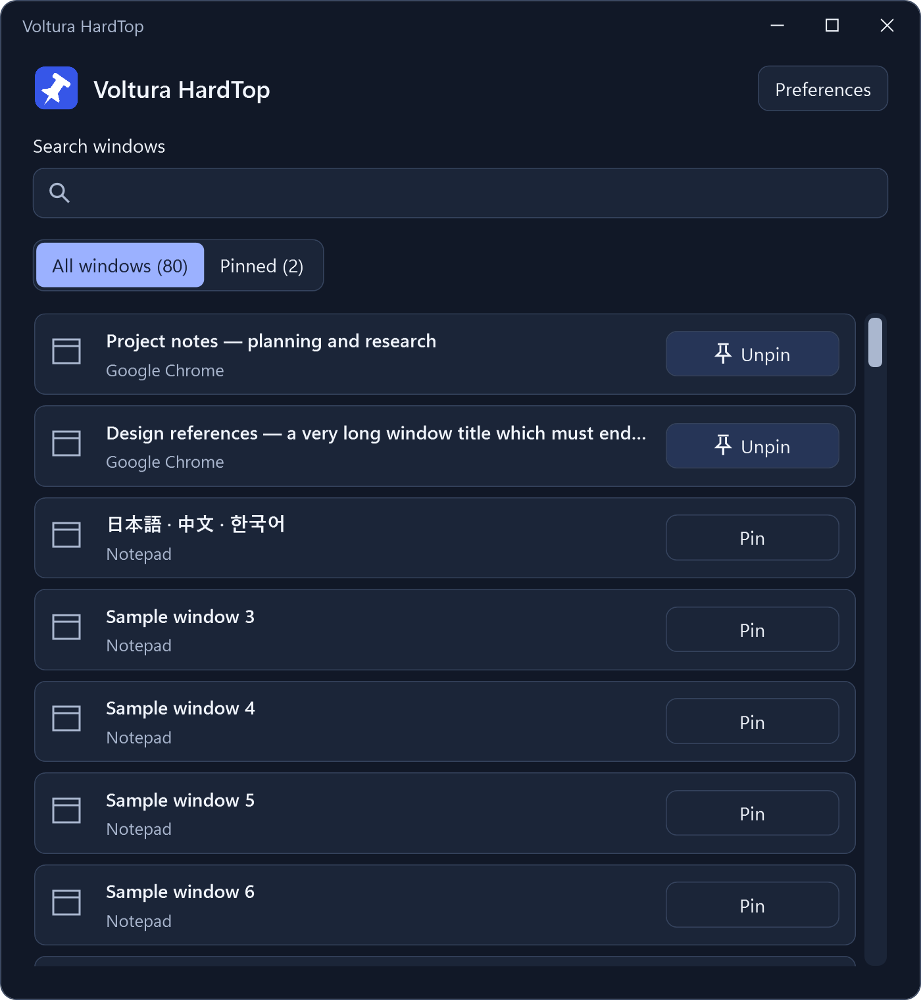
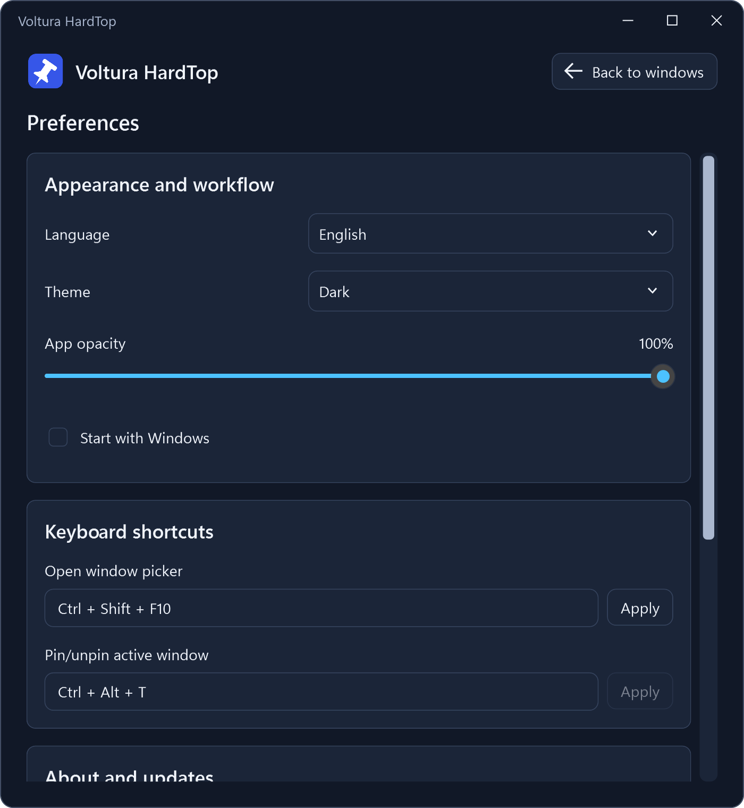

Windows installer
RecommendedInstalls for your Windows account. Includes .NET 10, with no separate runtime download.
Download for WindowsSelf-contained installer · x64
A little more focus. For Windows.
Your notes. A checklist. That reference you keep switching back to. Pin a window above the rest and keep going.

One small habit
Open the picker, search by title or app, and choose Pin.
Keep the window you’re using on top. Press again to unpin it.

Your Windows companion
A few useful choices, all in one place. Then back to what you were doing.
Quietly useful
Window information and settings stay on your computer. Installed copies contact GitHub to check for updates.
Closing the picker keeps HardTop running in the tray. When you choose Exit, HardTop restores the pin changes it made during that session.
Get Voltura HardTop
Free for Windows x64. Choose the package that fits.
Installs for your Windows account. Includes .NET 10, with no separate runtime download.
Download for WindowsSelf-contained installer · x64
Extract into a writable folder and run. Keep the app and its settings together, without installation.
Download portableSelf-contained ZIP · x64
Updates stay in your hands. Installed copies download verified updates; you choose when to install. Portable copies use manual downloads.
Also available on SourceForge. See release notes and all downloads.
Closing the app window hides it to the tray. Choose Exit to restore HardTop’s own pin changes and stop the app. Pins are restored on graceful exit; they are not remembered across restarts, and restoration cannot be guaranteed after a crash.
Some protected or elevated windows may require permissions HardTop does not have. HardTop runs without requesting administrator access.
Voltura HardTop is a fresh application based on the original HardTop. The original repository, downloads, website, and settings remain unchanged. Avoid running both together with the same shortcut bindings.
Start with the support guide, or report a problem on GitHub. Redact personal window titles and paths from screenshots. For security concerns, use the private reporting instructions.
Made by Voltura
HardTop is free and open source. If it makes your day a little easier, you can support its development.